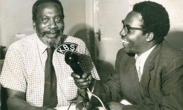

This portfolio belongs to Jomo Kenyatta.
Jomo Kenyatta was born to Kamau Wa Muigai to parents Muigai and Wambi. They were ordinary people whose main preoccupation was farming in Gatundu village. The exact date of Kenyatta’s birth is not known for certain but is presumed to be around 1895. Kenyatta was born some twenty-five miles north-east of Fort Smith at Ngenda, a land of sugar cane and cattle pasture where two rivers met. After Kenyatta’s birth and his passage from infancy to childhood, Muigai and Wambui had another son, Kungu. Earlier, there had been an older boy also called Kongo who had died. The second Kongo bore the same name as Muigai’s father. Among the traditional African communities, a child learnt many skills from the father depending on what the father was thus Kenyatta spent most of his childhood herding the family’s flock, usually with other boys from neighboring families.
 go to education page